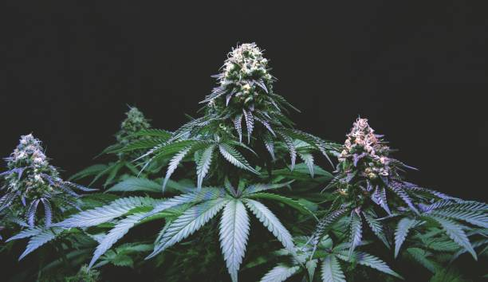

News
Cannabis Cultivation Certifications
Cannabis Dispensary Certifications
Cannabis Compliance Certifications
About Us
US Cannabis Trade Association
What is a Cannabis Trade Professional Certification?
Jun 02, 2024
A Cannabis Trade Professional Certification is a credential that individuals working in the cannabis industry can obtain to demonstrate their knowledge, skills, and expertise in the field.. This certification serves as proof of their competence and commitment to professionalism within the industry.
In order to achieve a Cannabis Trade Professional Certification, individuals typically need to complete a series of courses or training programs that cover various aspects of the cannabis trade, including regulations, cultivation techniques, product knowledge, and customer service.
What Are the Benefits of Obtaining a Cannabis Trade Professional Certification?
Jun 02, 2024
Obtaining a cannabis trade professional certification can offer numerous benefits to individuals looking to enter or advance in the rapidly growing industry.
First and foremost, earning a certification demonstrates a commitment to professionalism and excellence in the field of cannabis.. It shows employers, clients, and colleagues that you have taken the time to educate yourself on best practices, regulations, and industry standards.

What Does It Take to Earn a Cannabis Trade Professional Certification?
Jun 02, 2024
Earning a cannabis trade professional certification requires dedication, hard work, and a commitment to learning the ins and outs of the industry.. As the cannabis industry continues to grow and evolve, having a certification can set you apart from others in this competitive field.
To earn a cannabis trade professional certification, you will need to complete a comprehensive training program that covers all aspects of the industry.
What Are Some Common Cannabis Trade Professional Certifications Available?
Jun 02, 2024
Cannabis trade professionals are a vital part of the rapidly growing cannabis industry.. As the industry continues to expand, there is an increasing demand for qualified individuals who possess the knowledge and skills necessary to succeed in this field.
What Career Opportunities Exist for Those with Cannabis Trade Professional Certifications?
Jun 02, 2024
The cannabis industry is rapidly growing, and with that growth comes a demand for skilled professionals.. Those who have obtained certifications in the cannabis trade have a wide range of career opportunities available to them.
One potential career path for individuals with cannabis trade professional certifications is working as a budtender or dispensary manager.
How to Become a Certified Cannabis Trade Professional and Land Your Dream Job
Jun 02, 2024
Have you ever considered a career in the booming cannabis industry?. With legalization spreading across the country, there has never been a better time to explore opportunities in this exciting field.
Discover the Secrets of Successful Cannabis Trade Professionals with This Certification Program
Jun 02, 2024
The cannabis industry is booming, with opportunities for success abound.. However, navigating the complex world of cannabis trade can be challenging without the right knowledge and skills.
Want to Excel in the Cannabis Industry? Learn How to Get Certified as a Trade Professional
Jun 02, 2024
Are you looking to take your career in the cannabis industry to the next level?. Getting certified as a trade professional is an excellent way to demonstrate your expertise and stand out from the competition.
As the cannabis industry continues to grow and evolve, employers are increasingly looking for individuals who have specialized knowledge and skills.
Unlock Your Potential in the Booming Cannabis Market by Obtaining a Professional Certification
Jun 02, 2024
Unlocking your potential in the booming cannabis market is now more attainable than ever before.. By obtaining a professional certification, you can set yourself apart from the competition and position yourself as a knowledgeable and skilled individual within the industry.
The cannabis market is rapidly expanding, with new opportunities arising every day.
Ready to Take Your Career in the Cannabis Industry to the Next Level? Find Out How to Get Certified Today
Jun 02, 2024
Are you looking to take your career in the cannabis industry to the next level?. Have you been wanting to get certified but aren't sure where to start?
Benefits of obtaining a cannabis trade professional certification
Jun 02, 2024
Obtaining a cannabis trade professional certification can provide numerous benefits for individuals looking to enter or advance their careers in the cannabis industry.. This certification demonstrates a commitment to professionalism, knowledge, and expertise in the field, which can help individuals stand out among their peers and increase their credibility with employers.
One of the key benefits of obtaining a cannabis trade professional certification is the opportunity for career advancement.
Requirements and process for earning a cannabis trade professional certification
Jun 02, 2024
Earning a cannabis trade professional certification is an important step for individuals looking to enter the rapidly growing cannabis industry.. This certification demonstrates a commitment to professionalism and expertise in the field, and can open up new opportunities for career advancement.
To earn a cannabis trade professional certification, there are typically several requirements that must be met.
Comparison of different cannabis trade professional certifications available
Jun 02, 2024
As the cannabis industry continues to grow and evolve, so does the need for professionals who have specialized knowledge and skills in this field.. One way that individuals can demonstrate their expertise is by obtaining certifications in various aspects of the cannabis trade.
There are a number of different certifications available to those interested in working within the cannabis industry.
Career opportunities and advancement with a cannabis trade professional certification
Jun 02, 2024
In today's rapidly growing cannabis industry, individuals looking to advance their career and capitalize on the abundance of opportunities available can greatly benefit from obtaining a professional certification.. A cannabis trade professional certification not only demonstrates a commitment to excellence and expertise in the field but also opens doors to new career paths and advancement within the industry.
With legalization spreading across various states and countries, the demand for knowledgeable and skilled professionals in the cannabis industry is higher than ever before.
Importance of continuing education and staying updated in the cannabis industry
Jun 02, 2024
In the ever-evolving cannabis industry, staying updated and continuing education are crucial for success.. The importance of keeping abreast of new trends, regulations, and research cannot be overstated in an industry that is constantly changing and growing.
One of the key reasons why staying updated is so essential in the cannabis industry is due to its rapidly changing legal landscape.